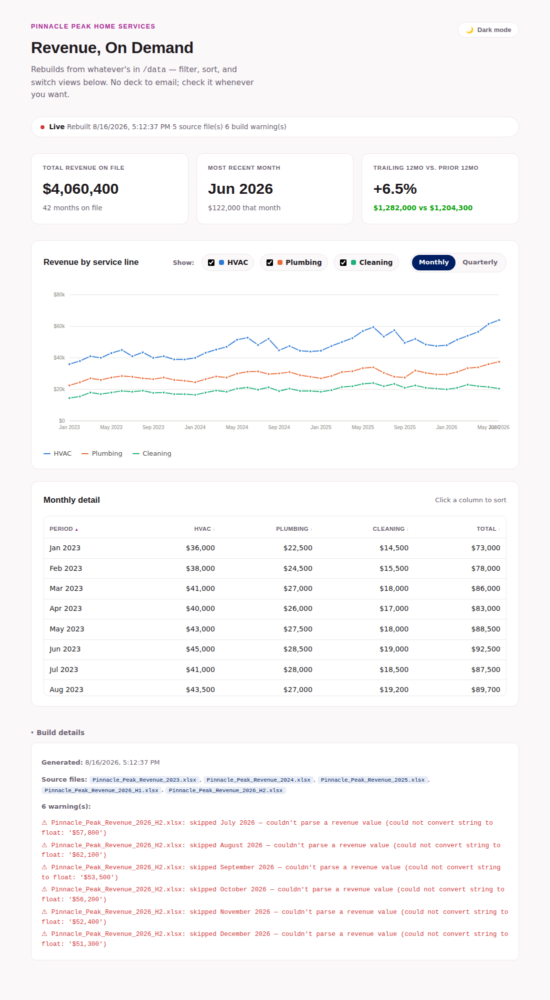
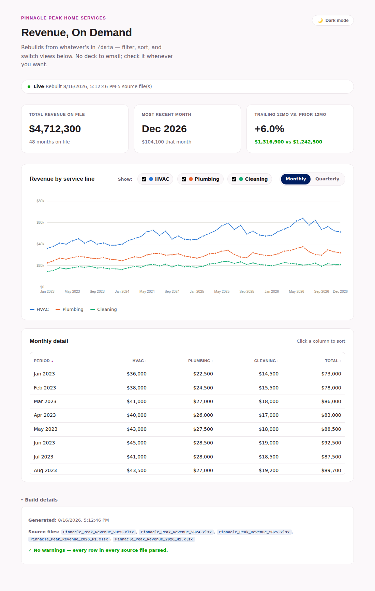

Facilitator Manual · Not for learner distribution
Module 3: Data On Demand
Reimagined as a Level 2 build-and-break lab. Everything you need before you teach this, including the verified answer key for the technical break in Beat Two.
Overview
Same Pinnacle Peak Home Services scenario as the old Module 3, same setup: the Director loved last quarter's report enough that she wants one every month — and said, "can I just check this myself whenever I want." The old (Level 1) build answered that with a one-shot AI-generated dashboard and a chart-picking exercise. This reimagine answers it for real: learners build an actual local webpage that reads a data folder, then we hand them new data engineered to break the rebuild, and the whole second half of the module is about noticing that and fixing it.
This is the only Level 2 module in the curriculum, with Module 2 as an explicit prerequisite — not just for the shared characters and data, but because the verification habits Module 2 built (checking a number against its source, not taking AI's output on faith) are exactly what Beat Two demands, aimed at a pipeline instead of a paragraph.
The two beats, reimagined
Beat One — Build the living report
Learners point their AI assistant at a folder of Pinnacle Peak revenue spreadsheets and have it build a webpage that reads that folder and renders it — served locally, with real interactivity (filter / sort / toggle), not a static export. Stretch: sketch what handing this to IT for real hosting would take.
Beat Two — New numbers, hit rebuild, make it break
A new six-month data file goes into the folder. Learners rebuild. The rebuild does not crash — it silently fails to pick up the new file, so the report still looks fine at a glance. The exercise is entirely the two moves that follow: noticing the rebuild didn't actually do what it claimed, and fixing the real cause (not the symptom).
The two big ideas
1. AI supplements your technical skills
Beat One is meant to open the room's imagination — most learners will leave having run a local web server for the first time, built and shipped by prompting, not typing code. Let that land before Beat Two complicates it.
2. It's not magic — maintenance is real
Beat Two is the grounding wire. A living tool trades one-time report-writing for ongoing tech debt — hosting, upkeep, and breakage are real, recurring costs, not a one-time build fee. Both ideas need to land in the same room for this module to do its job; don't let Beat One's excitement be the last word.
How the materials fit together
Four documents this time, not one deck. Know the map before you prep:
- Slide deck
Module3_Data_On_Demand_Reimagined.pptx— what you present. Frames the scenario, both beats, and both big ideas. It does not contain step-by-step build instructions — it points learners to the lab guide for that, the same way you'd point them to a handout instead of reading it aloud.- Lab guide
Module3_Lab_Guide.html— the learner-facing steps for both beats, plus the MVP checklist and the stretch IT hand-off prompt. This is what learners actually follow with their hands on the keyboard. It's deliberately silent on what the Beat Two break actually is — don't paraphrase the answer key from this manual into it live.- Starter kit
Module3_LivingReport_Starter.zip— the data folder (2023 through 2026 H1) learners unzip and hand to their AI assistant for Beat One. Nothing pre-built inside for learners; see below for the facilitator-only working reference.- This manual
- Prep, run sheet, full data notes, and the verified Beat Two answer key — screenshots included, so you recognize a correct diagnosis when you see one and know what "fixed" actually looks like.
Built from the original grounding notes in Module3_Reimagine_Concept.html, kept in the folder for provenance — the open questions it raised (serving mechanics, break design, diagnostic guide, prerequisite enforcement) are the ones this manual and the lab guide answer.
Preparation
- Read this manual's "The Beat Two answer key" section in full before you teach this — it's the fastest way to recognize a correct fix versus a lucky-looking one.
- Actually run the starter kit yourself once, start to finish, including dropping in the H2 file and reproducing the break — see the Quick Start below. Reading about it isn't the same as watching your own terminal do it.
- Skim the deck's speaker notes for timing and beat-by-beat framing language.
- Confirm learners have a laptop, an AI assistant with the ability to run commands / write and execute code on their machine (not just chat), and Python 3 available — the reference build uses
python3 -m http.server, the simplest thing that needs zero installs. If your room's AI tool can't execute code or start a local process, flag that before the session; Beat One depends on it. - Have your own working copy of the report (built via the Quick Start below) open and ready to share-screen as a "here's roughly what you're aiming for" reference if a group stalls in Beat One — don't show it up front.
Quick start — reproduce the whole arc yourself
unzip Module3_LivingReport_Starter.zip -d ref && cd ref
python3 build.py # clean rebuild: 42 months, 0 warnings
cd report && python3 -m http.server 8000
# open http://localhost:8000/ — confirm it runs through Jun 2026
# now reproduce Beat Two:
cd ..
cp ../Pinnacle_Peak_Revenue_2026_H2.xlsx data/
python3 build.py # "succeeds" — but read the console output
# refresh the browser tab — still stuck at Jun 2026, 6 warnings in Build detailsThe Beat Two answer key
This is the part worth being precise about. The break is designed to be 100% reproducible — it isn't a subtle content judgment call like Module 2's traps, it's a real data-format change that will break any rebuild pipeline built the way most AI assistants build one on a first pass.
What's actually wrong with the H2 file
BREAKPinnacle_Peak_Revenue_2026_H2.xlsx
- Every prior file (2023, 2024, 2025, 2026 H1) stores HVAC / Plumbing / Cleaning / Total as plain numbers. The H2 file stores the exact same columns — same headers, same layout — as currency-formatted text:
"$57,800"instead of57800. - In-story reason (stated in the file's own note row, for learners who read it): Pinnacle Peak's ops team finished rolling out a new reporting portal in Q3 2026, and its export format changed. This is a real, common failure mode — not an arbitrary gotcha — and it's the same "systems drift" thread Module 2 already planted (the July system migration mentioned in
Pinnacle_Peak_Q3_Data.xlsx). - Because the header names and sheet layout are unchanged, this is a data-type problem, not a schema problem — a rebuild script that looks up columns by name will find the right column and then fail to do math on it.
What actually happens on rebuild
The reference build script's original parser is float(cell_value), wrapped in a per-row try/except that logs a warning and skips any row it can't parse, rather than crashing the whole build. That's a realistic choice — plenty of real pipelines are written exactly this defensively, and it's arguably reasonable-looking code. The result: the rebuild exits cleanly (no red error, no crash), reports "5 source files" loaded, and still writes out a report — but all six new months are silently missing. The report still ends at June 2026 and the revenue totals don't move, even though a new file is sitting right there in the data folder.

Unfixed rebuild — looks almost fine at a glance

After the real fix — full 48 months, zero warnings
What to look for as the "notice" signal, in order of how likely learners are to catch each one:
- Most visible: the chart and table still end in June 2026 after adding six months of new data. This is the one to nudge toward if a group is stuck: "you just added data through December — does the report agree with that?"
- Also visible: the "Total revenue on file" and trailing-12-month KPI tiles don't change between rebuilds.
- For anyone who checks it: the status bar literally says "6 build warning(s)," and the Build details panel (collapsed by default, bottom of the page) lists a plain-language reason for each one.
- For anyone who reads the terminal: the console output from
build.pyprints the same six warnings live during the rebuild.
The real fix (and the trap fix to watch for)
The correct fix touches the parser in build.py, not the output. It needs to accept both a plain number (every file through 2026 H1) and a currency-formatted string (2026 H2 on):
def parse_number(value):
if isinstance(value, (int, float)):
return float(value)
if isinstance(value, str):
cleaned = value.replace("$", "").replace(",", "").strip()
return float(cleaned)
raise TypeError(f"unsupported cell type: {type(value)!r}")After that change, re-running build.py parses all six H2 months with zero warnings, and the report runs cleanly through December 2026 (screenshot above) — total revenue on file moves from $4,060,400 to $4,712,300, exactly the H2 total ($651,900). That exact number is a fast way to confirm a group's fix actually worked, not just stopped complaining.
Watch for the trap fix: the fastest way to make the warnings "go away" is to hand-edit report/data.json directly, or hardcode the missing months into the page. Both make the report look right for exactly one rebuild and silently break again the moment anyone reruns the real pipeline — which defeats the entire point of a living report. The lab guide tells learners not to do this; if you see it happen, that's the moment to intervene, not after.
Groups may also reach for other valid variations on the fix — e.g. cleaning the value inside the row loop instead of a helper function, or having their AI rewrite the whole parsing section differently. That's fine. The bar is: does build.py itself change, does it handle the new format without breaking the old files, and does a rerun produce all 48 months with no warnings.
Run sheet
Throughline to keep visible throughout: "A living tool doesn't remove the work — it converts it from 'redo the report' into 'notice when it breaks.' That job doesn't go away just because the report updates itself."
| Time | Section | What happens |
|---|---|---|
| 10 min | Setup | Recap Module 2 in one breath (Pinnacle Peak, the number chain, assistant vs. analyst). Read the Director's message. Land the ask: not a deck, an on-demand answer. Before touching AI: what would learners want a self-serve report to show first? |
| 25 min | Beat One — build | Learners unzip the starter kit and build the living report with their AI assistant, per the lab guide. Circulate for tech troubleshooting (local server issues) only — let everything else surface on its own. |
| 5 min | Beat One — check-in | Quick show of hands against the MVP checklist. Not everyone needs to be fully done to move on — Beat Two works with a partially-built report too. |
| 5 min | Big Idea One | Name it explicitly: what just happened was building and running real, working software by prompting. Let that sit for a moment before you complicate it. |
| 20 min | Beat Two — break & notice | Hand out the H2 file. Drop in, rebuild, look. Don't confirm or deny anything when learners ask "is this supposed to look like this?" — ask what they'd check next. |
| 15 min | Beat Two — fix | Work the real cause with their AI assistant. Watch for the trap fix (hand-editing output). Confirm via rebuild, not eyeballing. |
| 5 min | Big Idea Two | Name it explicitly: the break was the point, not a bug in the exercise. A living tool is an ongoing commitment, not a one-time deliverable. |
| 10 min | Naming the pattern | Pull back to vocabulary: this module's verification burden lands on a pipeline instead of a paragraph, but it's the same "don't outsource your thinking" muscle from Modules 1 and 2. |
| 10 min | Bring it home / wrap | Where does learners' own work have something that "should just update itself" but doesn't yet — and what would they actually need to keep it honest? |
~105–110 minutes total — longer than Modules 1 and 2's 90. That's a deliberate consequence of the hands-on technical build, not scope creep; don't compress Beat One's build time to force a 90-minute fit.
Data notes — the rest of the folder
The 2023–2026 H1 files are unchanged from Module 2 / the old Module 3 — full details live in the Module 2 facilitator manual. The short version, if you don't want to flip back:
XLSXPinnacle_Peak_Revenue_2023 / 2024.xlsx
- CORRECT Clean actuals. 2023 Q3 total reconciles to $261,500, same baseline as Module 2.
XLSXPinnacle_Peak_Revenue_2025.xlsx
- CAVEAT Notes state all 2025 figures are management estimates, not actuals — not a Beat Two concern (the estimates are still numeric and parse fine), but worth knowing if a sharp learner asks why 2025 looks unusually smooth.
XLSXPinnacle_Peak_Revenue_2026_H1.xlsx
- OPEN THREAD Notes flag Cleaning softness in Q2 2026, "possible East region competitor impact," still unresolved. The H2 file's note says this continued into Q3 and eased slightly by December — consistent, not contradicted, if a learner tracks it across both files.
Facilitator judgment calls
- If a group's AI assistant can't start a local server. Some tools can write code but not execute it. Have a fallback ready: pair them with a group whose tool can, or let them narrate what they'd run while you or a neighbor executes it. Don't let this stall Beat One for the whole room.
- If a group finishes Beat One early. Point them at the IT hand-off stretch in the lab guide rather than letting them idle — it's designed to absorb exactly this.
- How much to hint during "notice." If a group hits the 10-minute mark in Beat Two still convinced the rebuild worked, the one fair nudge is "you added six months — does the report agree with that?" Don't say more than that unprompted.
- The trap fix. Treat a hand-edited
data.jsonthe same weight Module 2 gives the OLD-tab mistake — a real, worth-naming error, not a shortcut to wave through because the room is short on time. - Whether to show your own reference build. Keep it in your back pocket, not on the projector by default — showing it early removes the build struggle Beat One is actually for. Reserve it for a group that's genuinely stuck, not merely slower than others.